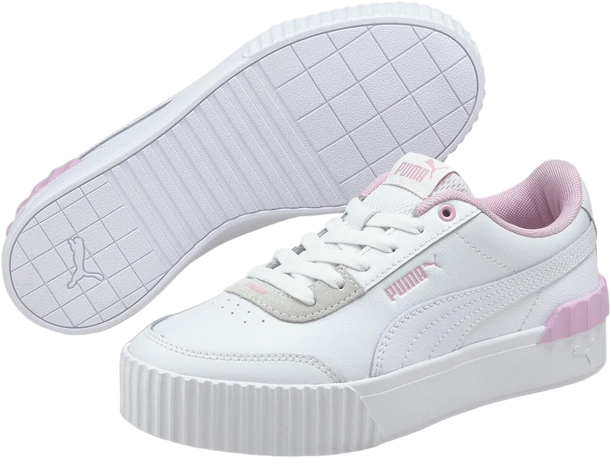

- See The Game Like We Do
Puma

Acerca de
El origen de Puma se remonta a los años veinte del siglo XX, cuando Rudolph Dassler, fundador de la marca, puso en marcha una fábrica junto a su hermano Adolf en Alemania. Pronto, detectaron la necesidad de fabricar zapatillas para los deportistas, un sector en auge y poco explotado en la época. En los años 50, Rudolph decidió lanzar Puma en solitario. Los juegos olímpicos y los récords mundiales de los atletas que calzaban zapatillas de Puma contribuyeron a que la estilizada silueta de un puma en acción que funcionaba como emblema de la marca calara entre los deportistas y se popularizara a nivel internacional.